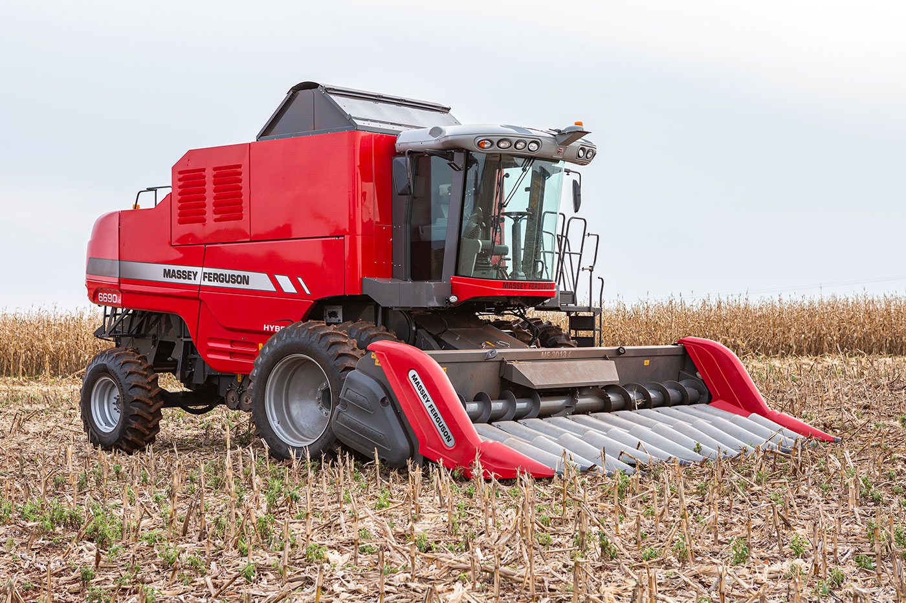

Características
A Massey Ferguson MF 6690 Hybrid é um trator robusto e versátil, desenvolvido para oferecer alto desempenho em diversas condições agrícolas. Ele combina tecnologia híbrida, potência e economia de combustível, se destacando pela inovação no campo.
- Modelo: Massey Ferguson MF 6690 Hybrid
- Potência: Até 185 hp, ideal para tarefas pesadas no campo
- Motor: Motor AGCO Power 4.4L, 4 cilindros, turboalimentado
- Transmissão: Transmissão Dyna-6 com 6 marchas eletrônicas para eficiência e economia de combustível
- Híbrido: Sistema híbrido para melhor desempenho e redução de emissões de poluentes
- Capacidade de Reboque: Capacidade de até 9.000 kg em atividades de reboque e transporte
- Sistema de Suspensão: Suspensão independente nas 4 rodas, oferecendo maior conforto e estabilidade
- Rodado: Pneus grandes para maior tração e estabilidade, ideais para terrenos difíceis

Benefícios
O trator Massey Ferguson MF 6690 Hybrid oferece uma série de vantagens que tornam o trabalho agrícola mais eficiente, sustentável e econômico:
- Desempenho Superior: A combinação de um motor potente e sistema híbrido garante alto desempenho em várias operações agrícolas, mesmo nas mais exigentes.
- Eficiência de Combustível: O sistema híbrido proporciona maior economia de combustível, otimizando os custos operacionais e aumentando a autonomia.
- Redução de Emissões: O motor híbrido contribui para a redução da emissão de poluentes, tornando o trator mais ecológico.
- Conforto e Estabilidade: Com a suspensão independente nas 4 rodas, o MF 6690 Hybrid proporciona uma condução mais suave e estabilidade em terrenos irregulares.
- Facilidade de Manutenção: A Massey Ferguson desenvolveu o MF 6690 com sistemas de fácil acesso para manutenção, reduzindo o tempo e os custos de reparo.
- Versatilidade: Ideal para uma ampla gama de operações, como preparo de solo, plantio, colheita e transporte.
Aplicações
O Massey Ferguson MF 6690 Hybrid é ideal para diversas tarefas agrícolas. Entre as principais aplicações, destacam-se:
- Preparação do Solo: Excelente para arar, gradear e preparar o solo para plantio, com alta tração e eficiência.
- Plantio: Ideal para o uso com semeadoras e plantadeiras, garantindo um plantio preciso e eficiente.
- Colheita: Pode ser utilizado para diversas operações de colheita, com alta capacidade de reboque e tração.
- Transporte: Ótimo para o transporte de cargas pesadas em terrenos difíceis, com sua grande capacidade de reboque e estabilidade.
- Uso em Pecuária: Pode ser adaptado para uso em atividades de pecuária, como transporte de forragem e materiais.
- Manutenção de Estradas e Áreas Abertas: A sua potência e durabilidade também são ideais para manutenção de estradas agrícolas e áreas externas.